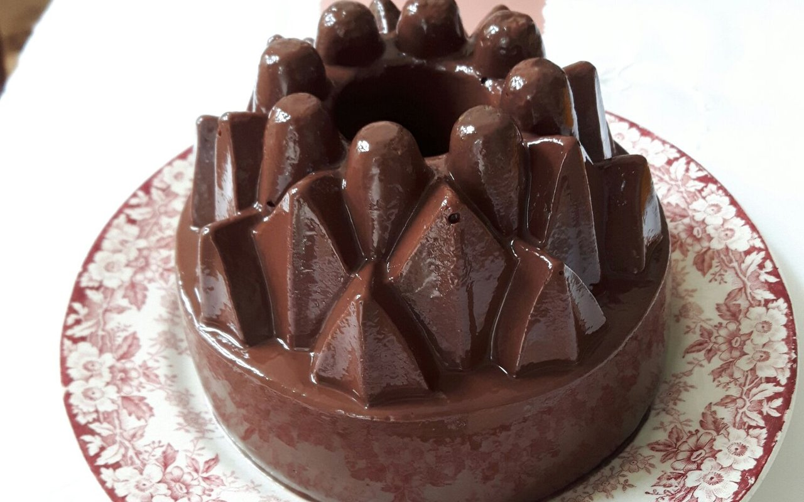

Choco drill
- ½ liter of cream or milk
- 10 g gelatin
- 4 eggs
- 75 gr cocoa or powdered chocolate
- 150 gr suger
- ½ stick of vanilla
Boil 4 dl cream or milk with the vanilla, stir the egg yolks with the sugar and cocoa or chocolate for 10 minutes, add the cold cream or milk and then slowly boil, let it boil for 5 minutes, stirring, add the soaked gelatin and stir briefly until it has dissolved, let the mass cool slightly, beat the egg white very stiff, mix it with the mass and let it stiffen in a mould.